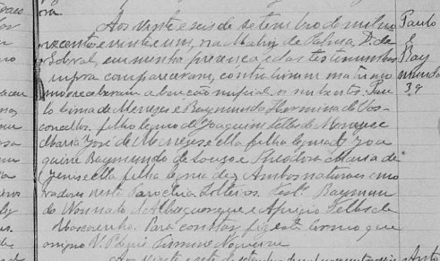
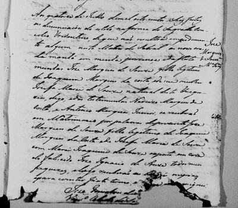
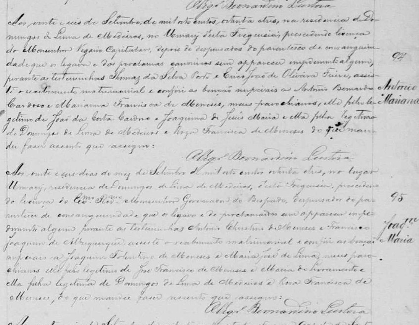

📜 Provas Documentais da Nossa História
Registros originais da Paróquia de Sobral que comprovam a união de nossas linhagens em 1849.
Matrimônio: Inocêncio de Lima Menezes e Teodorica Maria de Lima

(Clique na imagem para ampliar e clique novamente para voltar)
Transcrição:
“Aos oito de Janeiro de mil oitocentos e quarenta e nove, nesta Matriz de Sobral, Inocêncio de Lima Menezes, filho legítimo de Vicente Ferreira de Lima e Antônia Alves Linhares, com Teodorica Maria de Lima, filha legítima de Felipe Teles de Menezes e Constança Maria, moradores nesta Freguesia, se receberam por marido e mulher.”
O Vigário Francisco de AssisMatrimônio: Tataravós Antônio Marques de Souza e Floripes Maria da Encarnação

(Clique na imagem para ampliar e clique novamente para voltar)
Transcrição:
“Aos onze de Janeiro de mil oitocentos e quarenta e nove, nesta Matriz de Sobral, Antônio Marques de Souza, filho legítimo de José Marques de Souza e Maria Joaquina, com Floripes Maria da Encarnação, filha legítima de Antônio Manoel do Espírito Santo e Anna Joaquina, dispensados do impedimento de consanguinidade lateral.”
O Vigário Francisco de AssisMatrimônio: Paulo Lima de Menezes e Raimunda Hermina de Souza

(Clique na imagem para ampliar e clique novamente para voltar)
Transcrição parcial:
“Aos vinte e seis de setembro de mil novecentos e vinte e um, na Matriz de Palma, Distrito de Sobral, em minha presença e das testemunhas retro supra compareceram, contrahiram matrimônio e receberam a benção nupcial os nubentes Paulo Lima de Menezes e Raymunda Herminia de Vasconcellos. Filho legitimo de Joaquim Telles [Tolentino] de Menezes e Maria José de Menezes, e ella filha legitima de Raymundo de Sousa e Theodora Maria de Jesus...”
O Vigário Luiz Firmino NogueiraMatrimônio: Casamento de pentavós maternos José Marques de Sousa e Maria Joaquina de Jesus

(Clique na imagem para ampliar e clique novamente para voltar)
Transcrição parcial:
"Aos quatorze de Julho de mil oito centos e dez feitas as denunciaçoens de estilo na forma do Sagrado Concilio Tridentino, de que não resultou impedimento algum nesta Matriz de Sobral as nove horas da manhá em minha presença e das testemu[nhas]... digo, e das testemunhas Narcizo Marques da Costa, e Antonio Marques Junior, se receberão em Matrimonio por palavras de presente José Marques de Sousa filho legitimo de Joaquim Marques da Costa e de Josefa Maria de Sousa, com Maria Joaquina de Jesus exposta em casa do falecido José Ignacio de Sousa todos meus freguezes, e logo receberão as bençãos nupciais e para constar fiz este termo em que me assignei. José Gonçalves de Medeiros, Vigro Colado de Sobral"
🧾 Observação Genealógica:
O termo "exposta em casa de..." (visto no registro de Maria Joaquina) era usado na época para designar crianças que haviam sido deixadas (expostas na roda dos enjeitados ou na porta de alguém) e criadas por famílias adotivas. Nesses casos, o nome dos pais biológicos não é listado, apenas o da pessoa ou família que a acolheu.
O Vigário Luiz Firmino NogueiraMatrimônio: Bisavós Joaquim Tolentino de Menezes e Maria José de Lima

(Clique na imagem para ampliar e clique novamente para voltar)
Descrição do documento
Esta página contém dois registros de casamento realizados no mesmo dia e local, celebrados pelo vigário Bernardino Lustosa.
📜 Registro 1 (parte superior)
Noivo: Antônio Bernardo Cardoso
Filho legítimo de João da Costa Cardoso e Joaquina de Jesus Maria.
Noiva: Marianna Francisca de Menezes
Filha legítima de Domingos de Lima de Medeiros e Roza Francisca de Menezes.
Trecho da transcrição:
“Aos vinte e seis de Setembro de mil oitocentos oitenta e tres, na residencia de Domingos de Lima de Medeiros, no Umary d'esta Freguesia, precedendo licença do Exmo. Revmo. Vigario Capitular, depois de dispensados do parentesco de consanguinidade que os ligava e dos proclamas canonicos sem apparecer impedimento algum, perante as testemunhas Thomaz da Silva Porto e (...) João de Oliveira Freire, assisti o recebimento matrimonial e conferi as bençãos nupciais a Antonio Bernardo Cardoso e Marianna Francisca de Menezes...”
📜 Registro 2 (parte inferior)
Noivo: Joaquim Tolentino de Menezes
Filho legítimo de José Francisco de Menezes e Maria do Livramento.
Noiva: Maria José de Lima
Filha legítima de Domingos de Lima de Medeiros e Rosa Francisca de Menezes.
Transcrição integral:
“Aos vinte e seis dias do mez de Setembro de mil oito centos oitenta e tres, no lugar Umary, residencia de Domingos de Lima de Medeiros, d'esta Freguesia, precedendo licença do Exmo. Revmo. Monsenhor Governador do Bispado, dispensados do parentesco de consanguinidade que os ligava e de proclamados sem apparecer impedimento algum, perante as testemunhas Antonio Christino de Menezes e Francisco Joaquim de Albuquerque, assisti o recebimento matrimonial e conferi as bençãos nupciais a Joaquim Tolentino de Menezes e Maria José de Lima, meus parochianos, elle filho legitimo de Jose Francisco de Menezes e Maria do Livramento e ella filha legitima de Domingos de Lima de Medeiros e Rosa Francisca de Menezes, do que mandei fazer assento que assigno:”
Vigário Bernardino Lustosa🧾 Nota analítica
A noiva deste segundo registro, Maria José de Lima, e a noiva do registro superior, Marianna Francisca de Menezes, são irmãs, ambas filhas do casal Domingos de Lima de Medeiros e Rosa Francisca de Menezes.
Inventário de José Teles de Menezes - tataravô (1897)
Documento fundamental que descreve a sucessão de bens e confirma a filiação de Joaquim Tolentino de Menezes
, mantendo a integridade do patrimônio familiar no Ceará. Este inventário é uma peça-chave para a construção da genealogia e da história da família, evidenciando as relações de parentesco e a transmissão de bens ao longo das gerações.